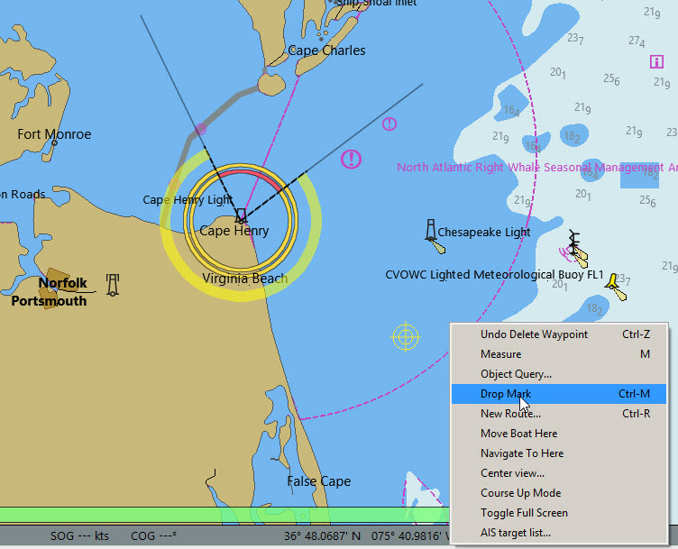
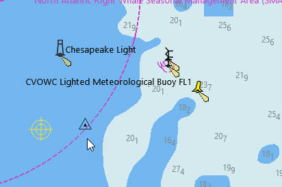
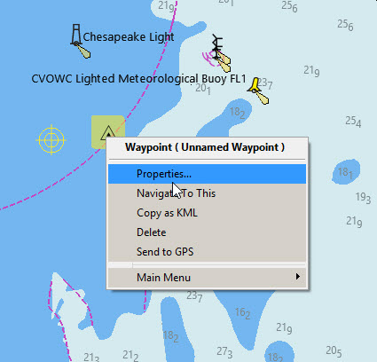
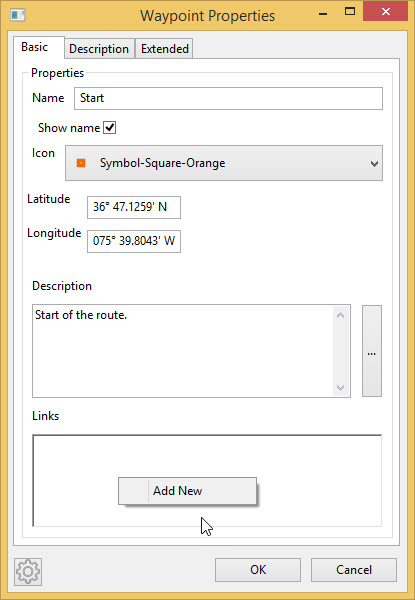
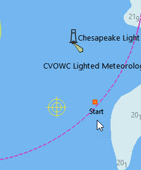
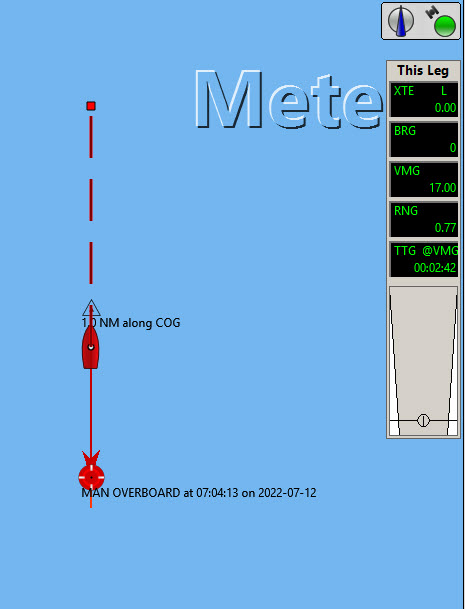
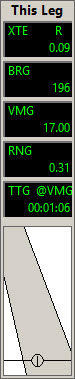
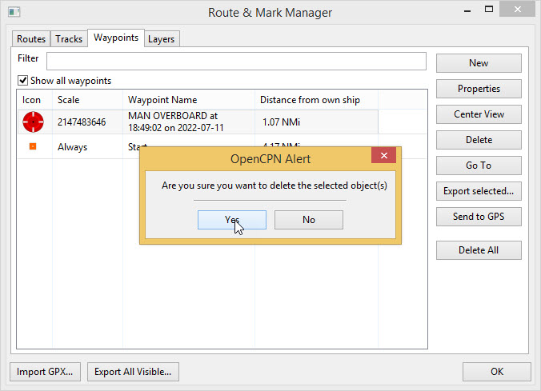

Waypoints
Waypoints are geo-referenced points that can be added to the chart. They perform a number of functions.
-
Mark alter course points on a planned route
-
Mark a significant location on the chart such as an anchorage or isolated danger
-
Are used by a plugin to mark a location that is linked to information on the Internet
-
Mark a man overboard position
Add a waypoint
Move the cursor to the position where you want the waypoint.
right-click

Drop Mark

right-click

Properties
The waypoint can be named and a different icon chosen with the dropdown. A description has been added.

Internet and file links are added with right-click

Add New

OK

The link will open the website.
The waypoint now appears like this.

right-click

Delete

Manoverboard (MOB) Marker

This drops a waypoint at the ship’s present position, which can be used to assist in returning for a recovery.

A temporay route is created, back to the manoverboard from a waypoint that has been dropped 1.0NM along the COG from the MOB.


The route information (This Leg) shows the range and bearing of the MOB and the time to reach the casualty.
More information about routes is HERE
*Deleting the MOB marker*
Unlike other waypoints the MOB cannot be removed with right-click Delete.
Route & Mark Manager 
Select the Waypoints tab. Select the MOB waypoint.
Delete Yes
